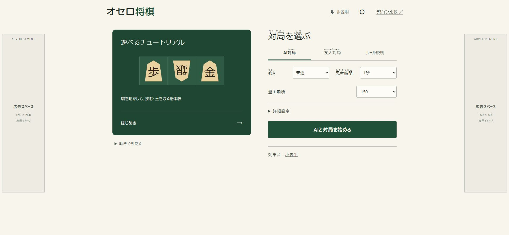
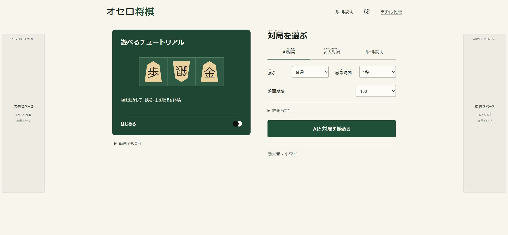
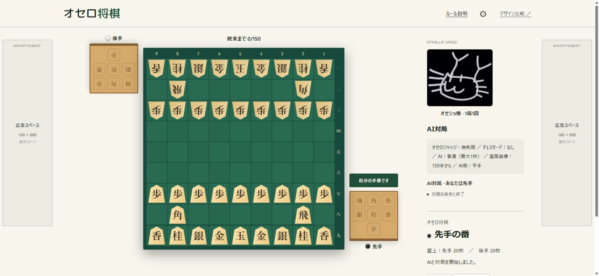
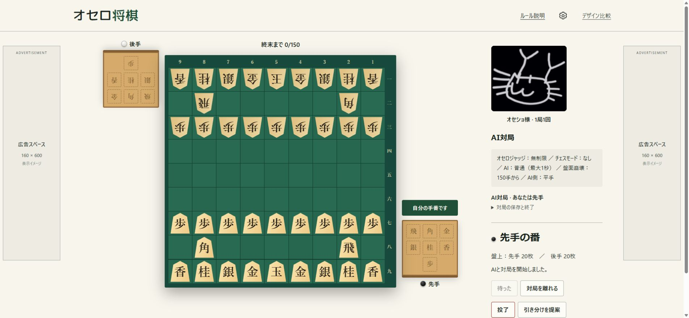
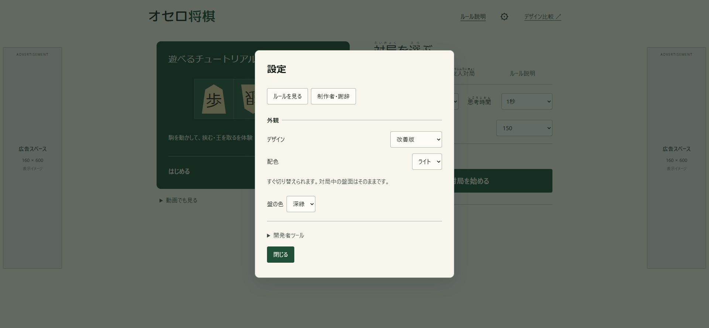
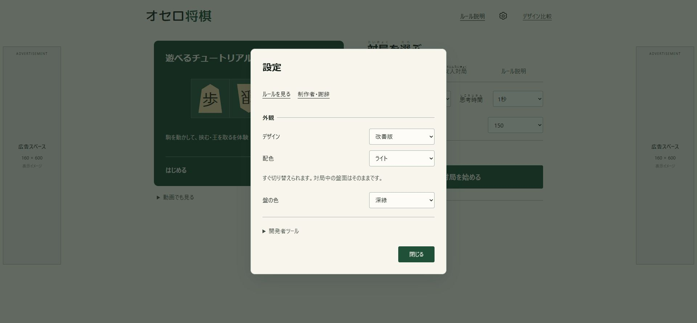

オセロ将棋のデザインを整える
採用したHallmark改善版を土台に、見た目の定型感を減らす小さな修正を加えました。すべて実際のブラウザのスクリーンショットです。ゲームのルール・AI・演出は変えていません。
開始メニュー
文字の強弱を整理し、チュートリアルの入口に黒白の石を添えました。




対局
重複するゲーム名を取り除き、対局操作までの余白を詰めました。同じ初期局面です。




設定
選択欄を同じ列と幅に揃え、関連ページへの移動と設定操作を見分けやすくしました。




スマホとダーク配色
320 / 375 / 414 / 768pxで開始メニューの操作が画面幅に収まることを確認しました。以下は設定・開始メニュー・ルールの実際の表示です。


参考にしたもの
Avoid AI Designの検査と修正手順を使いました。Impeccable、UI UX Pro Maxも比較しました。外部のUIライブラリ・画像・フォントは追加していません。
自動検査は見た目の良さを保証しません。リンク先のCSSを検査しないため出るフォーカス警告は、実際のCSSとキーボード操作で確認しています。